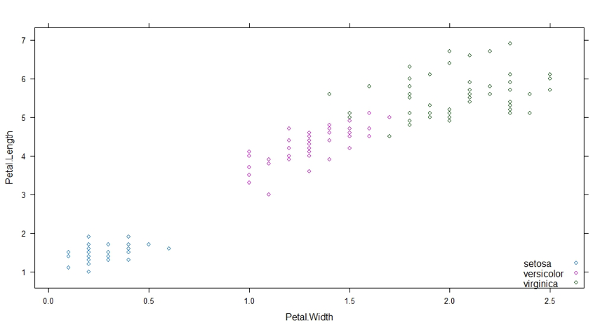

[实验目的]
[实验原理]
R工具是一套完整的数据处理、计算和制图软件系统。其功能包括：数据存储和处理系统；数组运算工具（其向量、矩阵运算方面功能尤其强大）；完整连贯的统计分析工具；优秀的统计制图功能；简便而强大的编程语言：可操纵数据的输入和输出以及可实现分支、循环等用户自定义功能。
[实验步骤]
- 熟悉R环境；
- 打开R云件环境；
- 在相应编程环境中修改和运行代码；
- 查看结果。
支持向量机首先是一种二分类模型，它的基本思想是找到线性空间中的一个超平面，可以将两类别正确分离并使几何间隔最大。当然能线性正确分隔的数据集毕竟很少，如果数据集线性不可分，即存在特异点，除去这些特异点后，数据集是线性可分的，则可以引入松弛变量和惩罚因子，使得分离间隔尽量大的同时误分类的点数目尽量少。对于非线性的分类问题，可以利用核技巧的方法，将数据集映射到高维空间中，在高维空间中训练数据集，找到能使分离间隔较大并且误分类点较少的超平面，这种方法叫做非线性支持向量机。支持向量机中对分离超平面的求解可以形式化为凸优化问题的求解，下面通过调用R语言中e1071包中的函数svm()展示支持向量机。
# 加载e1071函数包
library(e1071)
# 导入iris数据集
data(iris)
# 首先通过散点图观察数据集的大致分布情况，如图3-所示
library(lattice)
xyplot(Petal.Length ~ Petal.Width, data = iris, groups = Species, auto.key=list(corner=c(1,0)))

# 调用svm函数并观察分类后的超平面
svm_model <- svm(Species~Petal.Length+Petal.Width,data=iris)
plot(svm_model,iris,Petal.Length~Petal.Width)